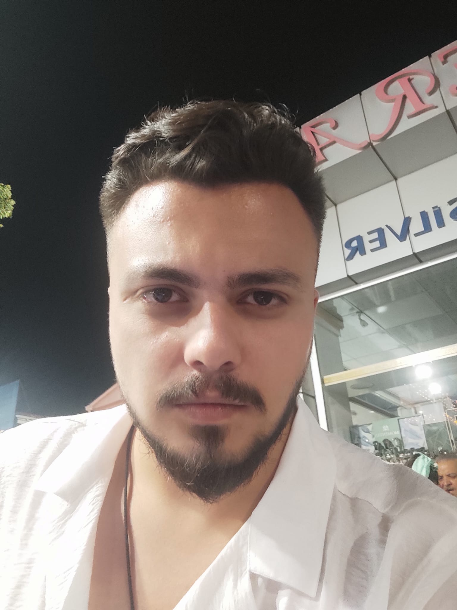
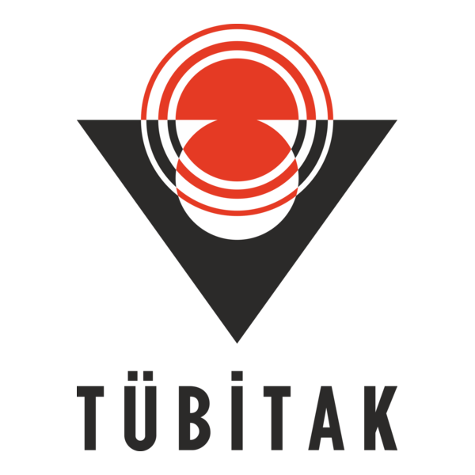
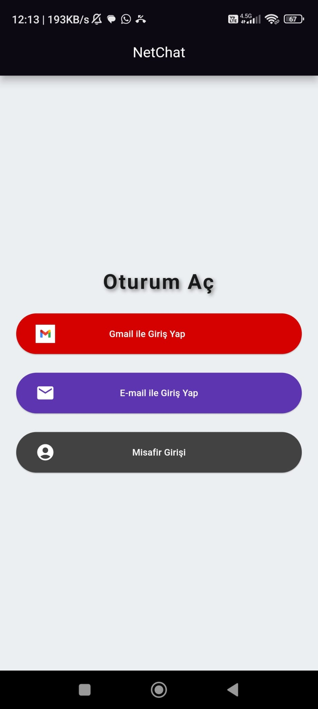
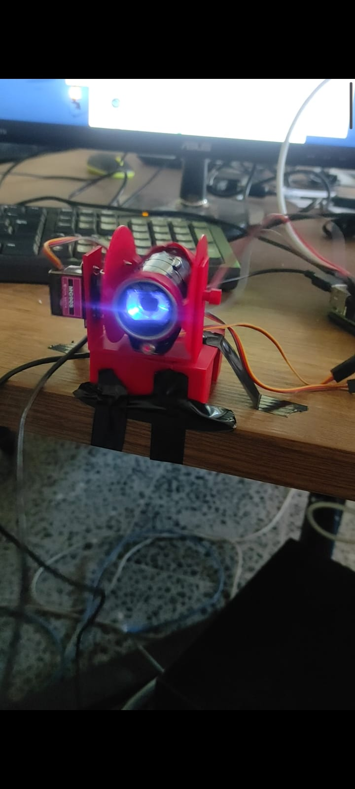
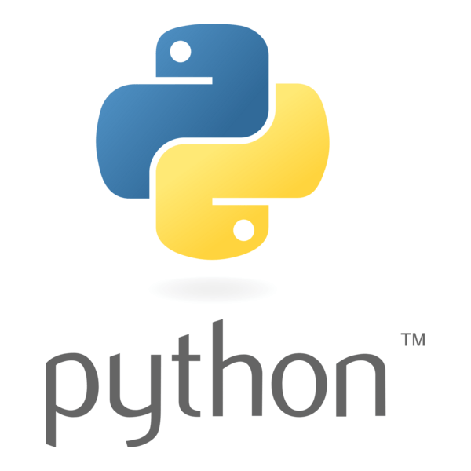

Yapay zekâ ve makine öğrenmesi
Veri hazırlama, model geliştirme, değerlendirme, optimizasyon ve karar destek yaklaşımları.
Bilgisayar Mühendisi
Yapay zekâ, veri odaklı algoritmalar ve yazılım sistemleri üzerine çalışıyorum. Karmaşık problemlere güvenilir, kullanılabilir ve sürdürülebilir mühendislik çözümleri geliştirmeyi önemsiyorum.

Fikirleri çalışan sistemlere dönüştürürken araştırma, geliştirme ve doğrulama süreçlerini birlikte ele alıyorum.
Yapay zekâ, makine öğrenmesi ve yazılım mühendisliği alanlarına odaklanıyor; gerçek dünya problemleri için uygulanabilir çözümler üretmeyi hedefliyorum.
Bilgisayarlı görü, mobil uygulamalar, veri analizi ve sensör tabanlı sistemler üzerinde çalışıyorum. Geliştirme sürecinde yalnızca bir özelliğin çalışmasına değil; performansına, test edilebilirliğine, güvenilirliğine ve uzun vadeli bakımına da önem veriyorum.
Araştırma ve takım çalışmasını teknik üretimin ayrılmaz bir parçası olarak görüyor; özellikle yapay zekâ ve ileri yazılım teknolojilerinde derinleşmeyi amaçlıyorum.
Farklı disiplinleri bir araya getiren, uçtan uca çözüm geliştirmeye yönelik teknik odaklar.
Veri hazırlama, model geliştirme, değerlendirme, optimizasyon ve karar destek yaklaşımları.
Görüntü işleme, nesne tespiti ve görüntü tabanlı algılama sistemleri.
Flutter ve Android ekosistemlerinde modüler, kullanıcı odaklı uygulama geliştirme.
Mobil sensörler, konum tahmini, gömülü sistemler ve yazılım-donanım entegrasyonu.
Yapay zekâ, mobil yazılım ve sistem geliştirme alanlarında üzerinde çalıştığım projelerden bir seçki.
Mobil sensör verileri, hareket analizi ve sensör füzyonu yaklaşımıyla GPS erişimi olmadığında yaya konumunu tahmin etmeye odaklanan uygulama.

ACCESSIBLE NAVIGATIONGörme engelli ve az gören bireyler için rota yönlendirme, kamera tabanlı engel algılama ve sesli etkileşimi bir araya getiren mobil yardımcı sistem.
Genomik veriler üzerinde patojenik ve benign varyantları ayırt etmeye yönelik özellik mühendisliği, makine öğrenmesi ve model değerlendirme çalışmaları.
İşletme yönetimi, yatırım, finans ve ekonomik karar mekaniklerini bir araya getiren, Flutter ile geliştirilen mobil ticaret ve yönetim simülasyonu.
Günlük görevler, rutinler, bildirimler ve kişisel çalışma akışlarını bir araya getirmeyi amaçlayan modüler, yerel odaklı Android uygulaması.

Flutter ve Firebase kullanılarak geliştirilen, gerçek zamanlı mesajlaşma altyapısına sahip mobil sohbet uygulaması.

Raspberry Pi, kamera ve servo motorların entegrasyonuyla nesne algılama ve hareketli pan-tilt mekanizması üzerinde gerçekleştirilen çalışma.

Video çevirisi, bütçe takibi ve sesli asistan gibi iş akışlarını kolaylaştırmaya yönelik farklı Python uygulamaları ve prototipleri.
Uygulamalı yazılım geliştirme ve donanım-yazılım entegrasyonu alanlarında edindiğim deneyimler.
Yazılım Stajyeri
GNSS kesintili ortamlarda yapay zekâ ve sensör füzyonu tabanlı mobil konum tahmini projesi geliştirdim. Mobil sensör verileri, hareket analizi, algoritma entegrasyonu ve sistem doğrulama üzerinde çalıştım.
Donanım Stajyeri
Raspberry Pi tabanlı görüntü işleme ve pan-tilt kontrol sistemleri üzerinde çalıştım. Ayrıca insansız hava aracıyla iniş alanı değerlendirmesine yönelik görüntü sınıflandırma çalışmasına katkı sağladım.
Teknik üretimin yanında araştırma sorumluluğu ve ekip koordinasyonunu bir araya getiren çalışmalar.
Proje Yürütücüsü
Görme engelliler için Google Maps tabanlı akıllı yol tarifi ve dinamik engel önleme sistemi geliştirme çalışması.
3MB-AI · Takım Kaptanı
Dört kişilik ekipte genomik varyant analizi için makine öğrenmesi modelleri geliştirme ve teknik çalışmaların koordinasyonu.
Yazılım geliştirme, yapay zekâ ve Ar-Ge odaklı çalışmalar hakkında iletişime geçmek isterseniz e-posta gönderebilirsiniz.